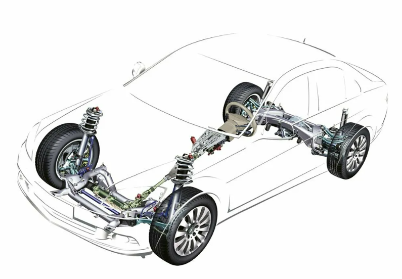

Ходовая часть автомобиля - это совокупность всех элементов, обеспечивающих плавное движение автомобиля по дороге. Она включает в себя подвеску, колеса, рулевое управление и другие компоненты.
Каждое колесо подвешено отдельно и может двигаться независимо от других колес. Обеспечивает лучшую управляемость и комфорт.
Колеса одной оси соединены жесткой балкой. Более простая и надежная конструкция, часто используется на задней оси.
Использует сжатый воздух для регулировки жесткости и высоты. Обеспечивает максимальный комфорт и возможность настройки.